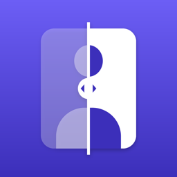

İletişim
Soru, öneri ya da sorun için buradan bir mesaj aç (GitHub hesabı gerekir; mesajlar herkese açıktır, kişisel bilgi ya da fotoğraf ekleme).
Gizlilik talepleri (verilerinin silinmesi gibi) için e-posta adresimiz, uygulama App Store'da yayımlanmadan önce bu sayfaya eklenecek. Bu tür talepleri ve kişisel bilgilerini GitHub'a yazma.
Sık sorulanlar
Fotoğraflarım yedekleniyor mu?
iCloud'a giriş yaptıysan projelerin ve fotoğrafların kendi iCloud hesabına eşitlenir ve aynı Apple Hesabıyla giriş yaptığın diğer cihazlarında görünür. Durumu uygulamada Ayarlar → iCloud'da görebilirsin. Ayrıca her projenin menüsünden "Tüm orijinalleri dışa aktar" ile fotoğraflarını Dosyalar'a ya da Fotoğraflar'a kaydedebilirsin (ücretsiz).
Hayalet kare nedir?
Önceki fotoğrafın kameranın üstünde yarı saydam görünür; aynı açıya gelmen kolaylaşır. Opaklığı kameranın altındaki kaydırıcıyla ayarlayabilirsin. Yüz, baş ve gövde açılarında hizaya gelince fotoğraf kendiliğinden çekilir; bunu Ayarlar → Kamera'dan kapatabilirsin.
Satın alımımı nasıl geri yüklerim?
Ayarlar → Abonelik → "Satın Alımları Geri Yükle". Aynı Apple Hesabıyla giriş yaptığından emin ol.
Aboneliğimi nasıl iptal ederim?
iPhone Ayarlar → adın → Abonelikler'den. İptal etsen de fotoğrafların kilitlenmez; premium özellikler dönem sonunda kapanır.
Bütün verilerimi nasıl silerim?
Uygulamada Ayarlar → "Tüm verilerimi sil". Bütün projelerin ve fotoğrafların bu cihazdan; cihaz iCloud'a giriş yapmışsa iCloud'undan ve diğer cihazlarından da silinir (iCloud'a o an ulaşılamıyorsa bağlantı gelince). Cihaz iCloud'a giriş yapmamışsa iCloud'daki eski kopyaları iCloud'a giriş yaptığın bir cihazdan silebilirsin. Fotoğraflar'a ya da başka yerlere kaydettiğin kopyalar etkilenmez; silmeden önce alınmış iPhone yedeklerindeki kopyalar o yedekler yenilenene kadar kalır.
Uygulama sağlık değerlendirmesi yapıyor mu?
Hayır. Uygulama yalnızca fotoğraf kaydı tutar ve hiçbir fotoğrafı değerlendirmez; tıbbi tavsiye vermez. Sağlığınla ilgili sorular için doktoruna danış.
Support (English)
Contact
For questions, ideas or problems, open a message here (requires a GitHub account; messages are public, so don't add personal details or photos).
An email address for privacy requests (such as deleting your data) will be added to this page before the app is released on the App Store. Don't post such requests or personal details on GitHub.
Are my photos backed up?
If you're signed in to iCloud, your projects and photos sync to your own iCloud account and appear on your other devices signed in with the same Apple Account. You can check the status in the app under Settings → iCloud. You can also save your photos to Files or Photos from each project's menu with "Export All Originals" (free).
What is the ghost photo?
Your previous photo appears semi-transparent over the camera, making it easy to match the same angle. Set its opacity with the slider under the camera. On face, head and body angles the photo is taken automatically when you line up; turn this off in Settings → Camera.
How do I restore my purchase?
Settings → Subscription → "Restore Purchases". Make sure you're signed in with the same Apple Account.
How do I cancel my subscription?
In iPhone Settings → your name → Subscriptions. Your photos are never locked; Premium features end at the end of the period.
How do I delete all my data?
In the app, Settings → "Delete All My Data". All your projects and photos are deleted from this device and, if the device is signed in to iCloud, from your iCloud and your other devices too (once iCloud can be reached). If the device isn't signed in to iCloud, delete older iCloud copies from a device that is. Copies you saved to Photos or elsewhere are not affected; copies in iPhone backups made before the deletion remain until those backups are replaced.
Does the app evaluate my health?
No. The app only keeps a photo record and never evaluates a photo; it doesn't give medical advice. If you have questions about your health, talk to your doctor.